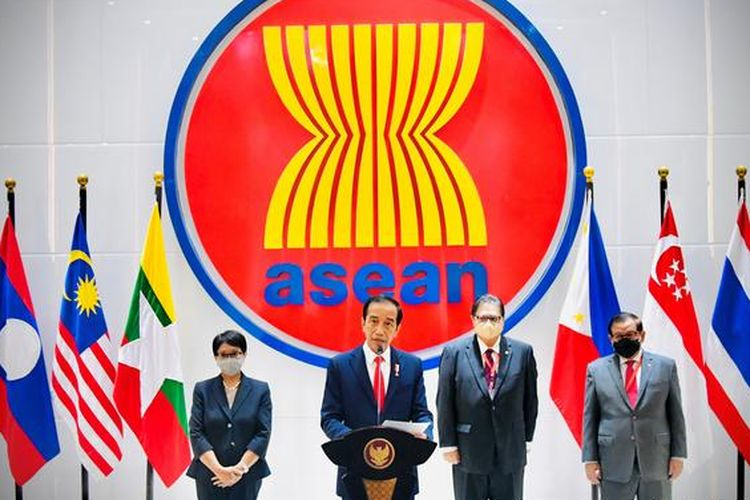
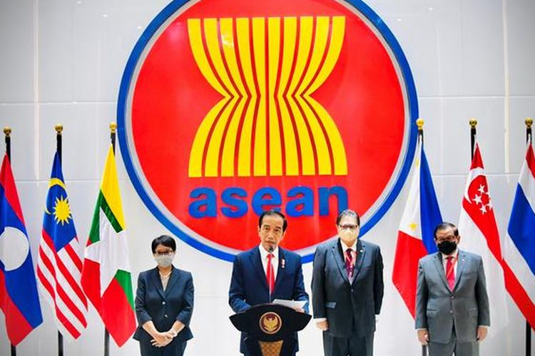

Selamat datang di web kolaborasi milik Valika Arum Murtani kelas 94 nomor absen 35. Dalam web ini, akan dijelaskan berbagai materi mengenai kerja sama dan Sustainable Development Goals (SDGs). Mulai dari penjelasannya, macam-macamnya, keterkaitannya, peran Indonesia, dan kesimpulan yang dapat ditarik. Pembuatan web mengenai keterkaitan kerja sama dan SDGs ini didasari atas perintah dari guru mata pelajaran TIK, PPKn, dan IPS. Web ini akan menjadi bahan penilaian akhir semester TIK dan ulangan harian PPKn serta IPS.
Seiring perkembangan zaman, kerja sama antar negara semakin banyak karena komunikasi dan transportasi sudah lebih canggih. Namun, kepedulian masyarakat akan kerja sama yang dilakukan negara mereka menurun. Banyak yang mulai tidak peduli dengan program-program yang dilaksanakan negara. Ketidakpedulian ini juga ditimbulkan dengan adanya perkembangan zaman. Sebagian besar masyarakat lebih mementingkan diri sendiri dan hiburan-hiburan yang ada di media sosial. Padahal, negara mereka adalah rumah mereka. Setiap tindakan yang dilakukan pemerintah pasti akan berpengaruh terhadap kehidupan mereka, baik itu tindakan yang berdampak positif ataupun negatif.
Terlihat jelas bahwa masyarakat Indonesia kurang mengenali program-program yang dilaksakan pemerintah Indonesia. Banyak yang tidak memahami program-program kerja yang dilaksanakan oleh pemerintah, mau itu program nasional atau program kolaborasi dengan negara lain. Tetapi, memang yang paling kurang terlihat adalah program-program kolaborasi dengan negara lain. Maka dari itu, pada kesempatan kali ini, saya akan menjelaskan beberapa program antar negara yang melibatkan Indonesia. Secara detail, saya akan membahas SDGs nomor 13 yaitu Climate Action yang memiliki target; memperbaiki iklim dunia yang memprihantikan. Pembuatan web dan isi materi telah saya kerjakan dengan sungguh-sungguh dan penuh semangat. Walaupun, saya juga mengalami banyak kendala dalam proses pengerjaan. Tetapi, saya dapat menyelesaikannya dengan baik. Saya harap web ini dapat memenuhi kriteria penilaian bapak/ibu guru dan bermanfaat bagi seluruh pembaca web.